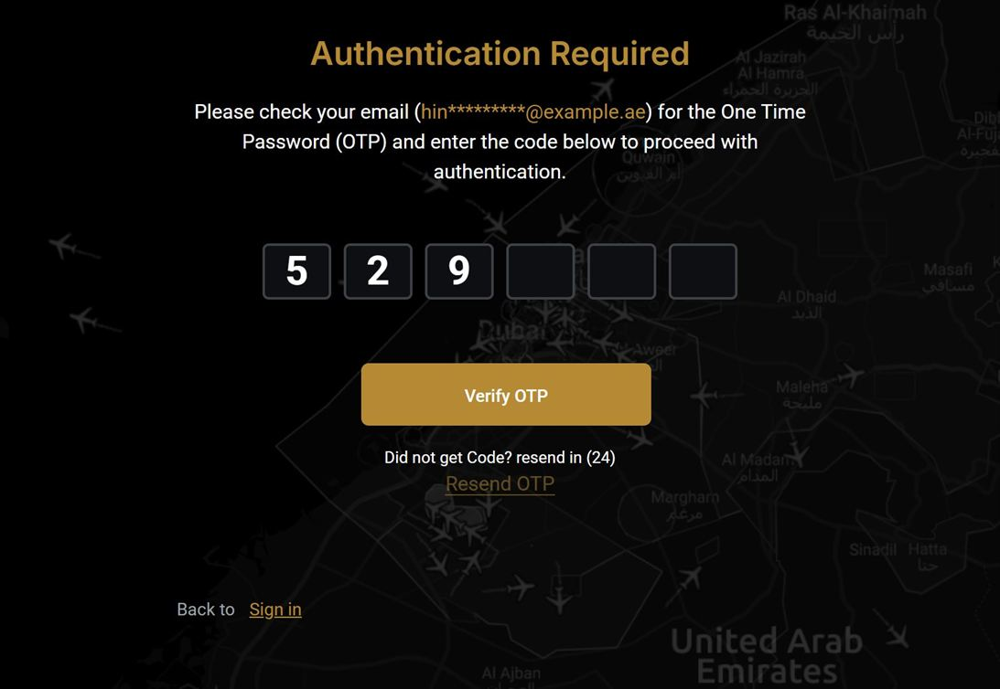
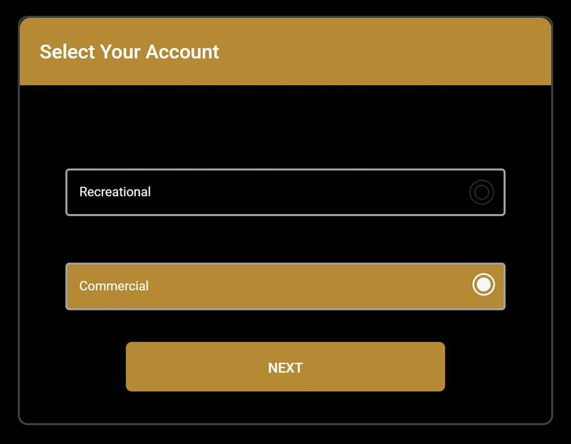

Case 13 · Authority portal
Two-step sign-in for the control-room portal
Staff sign in with a password and a one-time code, and operators sign in with the national digital ID. I built both flows in the authority's ASP.NET portal.
- JavaScript
- jQuery
- ASP.NET MVC
The problem
The portal needed a second factor for staff and national-ID sign-in for operators, in English and Arabic.
My part
- A segmented code input: auto-advance, Backspace goes back, a pasted code fills every box and submits.
- A resend countdown and a masked email in the prompt.
- National-ID sign-in that returns users to the page they asked for, and a picker for users with two profiles.
- Messages for cancelled, under-review and failed sign-ins in English and Arabic.
- The server actions behind them, with secure cookies and anti-forgery checks.
Result
Every staff sign-in has a second factor, and operators sign in with the ID they already use.




// paste a whole code into the first box inputs[0].addEventListener("paste", (e) => { const code = e.clipboardData.getData("text").replace(/[^a-z0-9]/gi, ""); e.preventDefault(); inputs.forEach((box, i) => (box.value = code[i] ?? "")); if (code.length === inputs.length) submitOtp(code); });